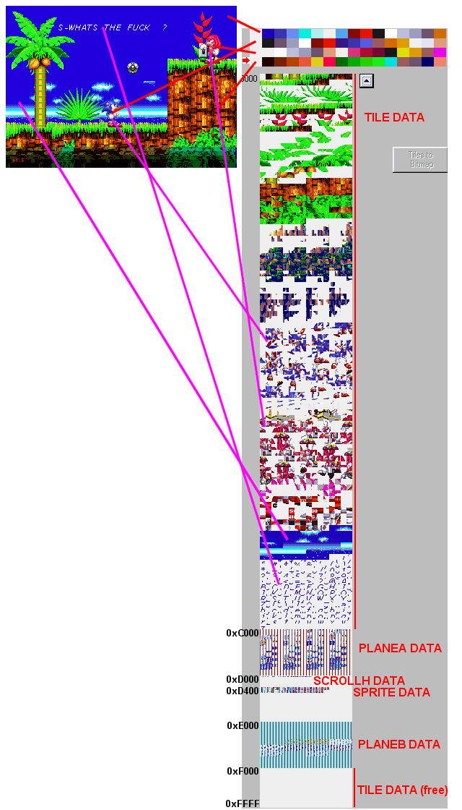

Pic b - Content of VRAM?
The VRAM is the 64K ram used by the VDP. This VRAM contains these parts:
1-All tiles (pattern).
2-PlaneA datas, PlaneB datas, PlaneW datas.
3-H scroll datas.
4-Sprites datas.
The position of the PlaneA datas & co in the VRAM is set with some VDP registers and may be different using bigger planes.
